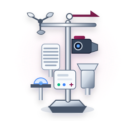
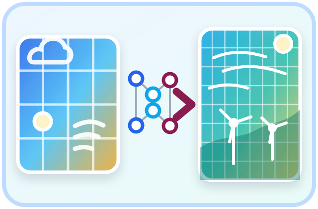

明月•万象 Agentic AutoML 全维智控体系架构
决策自动化，链路可溯源，误差可归因
查看各模块功能介绍
典型业务场景演示
输入
📈
时序数据
双来源输入
外生变量

来源 A
微气象站采集

来源 B
NWP + ML 降尺度
P
任务目标
智能体闭环
🤖 数据治理 Agent
清洗异常数据
输出质量报告
🤖 「Agentic AutoML」核心决策引擎
匹配场站条件，自动生成适用的预测方案
Sandbox Environment
「白盒」
机理驱动的泛化专家
小样本/新场站
透明解释 | 稳定基线
「黑盒」
数据驱动的拟合大师
成熟场站/复杂工况
非线性模式 | 精度提升
🤖 预测 Agent
生成出力预测
支撑调度决策
🤖 解释诊断 Agent
定位偏差来源
推动持续改进
🔄 闭环反馈：真实出力回流 ➔ 问题定位 ➔ 规划调整 ➔ 效果验证
输出
📉
预测结果
📄
总结文档
明月•万象系统，正为您打造更智能、更健壮的新能源预测生态
典型业务场景演示
☀️
场景一：新建光伏小样本
数据稀缺冷启动
白盒物理推演
🌪️
场景二：成熟风电大数据
海量复杂非线性
黑盒多智能体博弈
🌦️
场景三：气象信息对预测性能提升
气象环境突变
微气象特征深度介入
加载中...
加载中...
预制录屏视频播放区
加载中...
返回系统总览
模块名称
业务价值说明...
[ 静态示意图 / 动画展示区 ]
返回系统总览